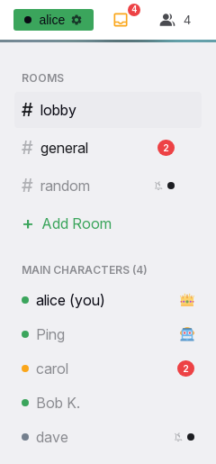

Notifications and unread
This page decides what is unread, when it becomes read, what the counts show, when a sound plays, what a mute silences, and when a device is notified while Yap is not in front. The places where the numbers appear are on the frame page; the rules that produce them are here.

Rules
What is unread
NT-01Every conversation has one unread count per person. It belongs to the account: every device of the person shows the same number, and a read on one device clears it on all of them at once.
NT-02Only a new message adds to a count. Edits, deletions, reactions, typing and presence never change it. The sender's own messages never count, also when sent from another device. Bot messages count like a person's.
NT-03A direct message counts for the other person, online or not. A room message counts for every person who is online at that moment and for every person who has that room unmuted. A person who is offline and has the room muted gets nothing, not even a dot. Why: nobody should come back to a sidebar full of dots for rooms they never opened.
NT-04A mute never stops counting. A muted conversation shows a dot instead of its number, and unmuting reveals the true count.
NT-05Counts survive a reload and a server restart. Signing out keeps them.
When a conversation becomes read
NT-06Opening a conversation marks it read: a tap in the sidebar, a link, a notification tap, a switch from another conversation.
NT-07A message that arrives in the open conversation is marked read at once when the page is visible, the person is not away, and the view is at the bottom. It then never shows a count on any device. Otherwise it stays unread until one of those becomes true: the tab comes back to the front, the person becomes active again, or the view reaches the bottom.
NT-08A read clears the whole conversation. There is no partial read, no divider and no "mark all as read".
Counts, total and badges
NT-09A conversation's row shows its count when it is unmuted, a dot when it is muted, and nothing when it is the open conversation.
NT-10The total in the mailbox is the sum of the counts of the unmuted conversations, without the open conversation. It equals the sum of the numbers the rows show.
NT-11The installed app's icon badge shows the total of unread unmuted conversations. It updates while the app is open and when a notification arrives while it is closed. A read on another device corrects it at the next notification or the next open.
NT-12While the tab is hidden, the tab title starts with the number of arrivals this tab has seen since it was hidden, by the mute rules below. The number resets when the tab comes to the front. On a room page every unmuted conversation counts; on a direct message page only direct messages count.
Sound
NT-13A sound plays when a direct message arrives from someone else while the tab is hidden and a direct message page is open, unless the arriving direct message is muted. It never plays on a room page, never while the tab is visible, never for the person's own messages. Status does not matter.
NT-14One sound per arrival, whatever the number of tabs.
NT-15The sound cannot be changed or turned off. A mute is the way to silence it.
Mutes
NT-16Mutes have three levels, read top down; the first that decides wins: the whole server, then all direct messages or all rooms, then one conversation.
NT-17The server-wide mute has a duration: 1 hour, 1 day, 1 week, or until the person turns it back on. While it is on, the status menu shows a crossed bell and the per-conversation settings are hidden.
NT-18Direct messages and rooms each have a mode: "Allow all", "Individual" or "Mute all". In Individual mode every conversation has its own bell. New direct messages follow the "New DMs" bell; a new room is muted until the person allows it.
NT-19Defaults for a new account: the server allowed, direct messages allowed, rooms muted.
NT-20The conversation a message arrives in decides: its mute setting applies to the count, the total, the badge, the sound, the tab title and the notification. The open conversation's setting does not matter.
NT-21A muted conversation shows a dot when something arrives and nothing else: no number, no sound, no notification, no move to the top of the people list. Per-conversation choices survive a switch of mode and return with it.
NT-22Mutes belong to the account and apply on every device. They are set in Settings only, under "Allow / Mute Notifications", and apply at once.
Notifications on a device
NT-23Any browser that supports it, and the installed app, can receive notifications while Yap is not open. A device subscribes in Settings, or from the "One more step" prompt in the installed app. Each device subscribes on its own.
NT-24A device's subscription belongs to the account signed in on it. Signing out removes it. "Sign out all other devices" removes the other devices' subscriptions too. A second account signing in on the device takes it over.
NT-25A notification is sent for a direct message to the other person, and for a room message to every person who has that room unmuted, except the sender.
NT-26No notification is sent to a person who has a visible Yap session on any device, whatever the status. Away does not suppress notifications: away is when the phone should buzz. A hidden tab suppresses nothing.
NT-27A direct message notification is titled "DM from {display name}" with the message text as its body. A room notification is titled "#{room}" with "{display name}: {text}". A message with a GIF reads "[GIF]"; a message with images or videos reads "[Attachment]". Bodies longer than 100 characters are cut with "...". Notifications of one conversation replace each other and alert again.
NT-28A tap on a notification opens that conversation in an open Yap window, or opens a new one. The notification carries the unread total for the icon badge.
NT-29Every message sends its own notification at once. There is no grouping delay and no summary message.
NT-30"Send a test to all devices" in Settings notifies every subscribed device, ignores every mute, and leaves the badge alone.
NT-31The notification prompt shows only in the installed app while the browser has not been asked, up to three dismissals. A refusal in the browser ends it for good; the person can still enable notifications in Settings when the browser allows it. See frame page.
States
| State or trigger | Input | What the user sees |
|---|---|---|
| Message in an unmuted room, person online elsewhere | all | Red count on the row; total up; notification only if the room is unmuted and no session is visible. |
| Message in a muted room | all | Dot on the row; nothing else. |
| Direct message, person offline | all | Count on the row at the next open; notification on every subscribed device. |
| Direct message, tab hidden on a direct message page | all | Sound; title "(1) …"; row count; no notification if the tab is visible on another device. |
| Direct message, visible session anywhere | all | No notification, no sound; count only where the conversation is not open. |
| Open conversation, visible, at the bottom | all | Arrival read at once; no count anywhere. |
| Open conversation, away or hidden | all | Stays unread; read when the person is back. |
| Open conversation, scrolled up | all | Stays unread until the view reaches the bottom; the pill shows. |
| Read on the phone | all | Desktop row and mailbox clear at once. |
| Tab returns to the front | all | Title prefix gone; open conversation read if at the bottom. |
| Server mute on | all | Crossed bell in the status menu; no sounds, counts or notifications. |
| Timed mute ends | all | Everything back to the settings below it. |
| Unmute a conversation | all | Its true count appears. |
| Notification tap | touch, mouse | The conversation opens and is read. |
| Test send | mouse, touch | Every device shows the test banner; result line for 3 s. |
Wording
| Where | Text |
|---|---|
| Direct message notification | "DM from {display name}"; body "{text}", "[GIF]" or "[Attachment]" |
| Room notification | "#{room}"; body "{display name}: {text}" |
| Notification when the content is missing | "New Message"; "You have a new message" |
| Test notification | "Yap test notification"; "If you can see this, push notifications work on this device." |
| Tab title prefix | "({n}) " |
| Mailbox tooltip | "{n} unread messages" |
| Sidebar bell tooltip | "Notifications muted" |
| Settings, device section | "Device Push Notifications"; "Push lets Yap notify a device even when the tab is closed. Each device subscribes separately."; "This device"; "Not Supported"; "Not Configured"; "Subscribed"; "Not subscribed"; "Browser Permission"; "Subscribed Devices"; "{n} device(s)"; "Added {time}"; "Delivered {time}"; "Remove" |
| Settings, device actions | "Enable push on this device"; "Enabling..."; "Your browser will ask for permission. Yap can then notify this device even when the tab is closed."; "Turn off push on this device"; "Turning off..."; "Stops push for this device only. Other devices stay subscribed; remove them in the list above."; "Send a test to all devices"; "Sending..."; "Sends a notification to every subscribed device — the ones that buzz are alive."; "Push only makes delivery possible. What actually notifies you is set in Allow / Mute Notifications below." |
| Settings, device hints | "Push notifications are not supported in this browser."; "Push notifications are not configured on this server."; "Notification permission was denied. Reset it in your browser settings to re-enable." |
| Settings, results | "No subscribed devices to notify."; "Sent to {n} device(s) — check them now."; "Sent to {sent}/{total} device(s); {failed} failed (expired ones removed)."; "Failed to send test notification."; "The browser closed the permission prompt without granting."; "Subscription failed in the browser: {error}." |
| Settings, rules section | "Allow / Mute Notifications"; "Choose what actually notifies you. These rules follow your account on every device."; "Everything on this server"; "Allow"; "Mute"; "Mute for"; "1 hour"; "1 day"; "1 week"; "Until I turn it back on"; "Muted for another {time}."; "Muted until you turn notifications back on."; "Direct messages"; "Rooms"; "Allow all"; "Individual"; "Mute all"; "New DMs"; tooltips "Allowed — click to mute", "Muted — click to allow" |
| Settings, footer | "A muted room or DM still shows a small dot in the sidebar when something arrives. It sends no notification, plays no sound, and adds nothing to the unread count." |
| Prompt | "One more step"; "Please enable notifications so Yap can send you notifs about new DM messages / mentions when the app is not open. You can always change this later in Settings, and you can also disable notifications temporarily."; "Enable Notifications"; "Maybe Later" |
Related
- Header, sidebar and overlays for the rows, the mailbox, the title and the prompt.
- Timeline and media for the view following the bottom and the New messages pill.
- Presence for away and visible sessions.
- Settings for the two notification sections.
- Administration for the notification audit admins see.
- Offline and installation for the installed app.